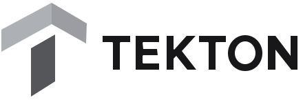

TEKTON / BRAND IDENTITYV2.0 / 2026
TEKTON.
The Operating System for Construction.
Design system, logo assets, colour standards and brand governance.
The Operating System for Construction.
Design system, logo assets, colour standards and brand governance.
TEKTON is a connected construction operating system. Its identity reflects real built environments: engineered forms, trusted workflows and the calm focus needed to deliver complex projects.
Quietly premium.
Quietly premium.
Quietly premium.
Quietly premium.
More visibility, fewer handoffs, better control across project delivery.
The Operating System for Construction.


Allow 25% of the icon width as clear space. Minimum horizontal logo width: 140 px digital / 30 mm print; icon: 24 px.
Never stretch, rotate, recolour or apply shadows, bevels or effects to the mark.
| Colour | HEX | RGB | CMYK (approx %) |
|---|---|---|---|
| charcoal | #1F1F1F | 31, 31, 31 | 0, 0, 0, 88 |
| slate | #3A3A3A | 58, 58, 58 | 0, 0, 0, 77 |
| graphite | #6B6B6B | 107, 107, 107 | 0, 0, 0, 58 |
| ash | #D4D4D4 | 212, 212, 212 | 0, 0, 0, 17 |
| concrete-white | #F5F5F2 | 245, 245, 242 | 0, 0, 1, 4 |
| surface | #E9E9E7 | 233, 233, 231 | 0, 0, 1, 9 |
| border | #DADADA | 218, 218, 218 | 0, 0, 0, 15 |
| white | #FFFFFF | 255, 255, 255 | 0, 0, 0, 0 |
CMYK figures are approximations only. Printed work requires substrate-specific proofing.
Aa
Inter is the primary typeface. Fallback: Arial and sans-serif.
| Role | Size | Weight |
|---|---|---|
| Hero H1 | 48–64 px | Bold 700 |
| Section H2 | 28–40 px | Semibold 600 |
| Body | 15–18 px | Regular 400 |
| Caption | 11–13 px | Medium 500 |
Use concrete-white page backgrounds, white cards, charcoal actions and restrained lines. The user interface should prioritise readability and real task completion.
Home
Projects
Procurement
Finance
Documents
Cards: 16 px radius. Inputs: 6 px radius. Spacing: 4–64 px scale.
Accessible functional status colours are permitted for warnings, failures and completion, but should not dominate the brand itself.
Construction, connected.
Write for project managers, engineers and operational teams. Be direct, measurable and appropriately qualified. Do not promise results the software cannot yet demonstrate.
“Bring projects, people, procurement and costs into one clear workflow.”
“Revolutionary!”, “The world's only construction OS”, and claims of guaranteed financial savings.
TEKTON is the selected working name; complete professional trademark clearance and domain review before marketing it as an exclusive commercial brand. Do not use ™ or ® in official assets.
The two grey roof beams meet along a center seam. The dark vertical pillar is completely detached, with a visible minimum clearance of 10.722 units on the 96-unit SVG grid. Old overlapping artwork is deprecated. All logo illustrations shown here are linked to the corrected editable SVG masters.